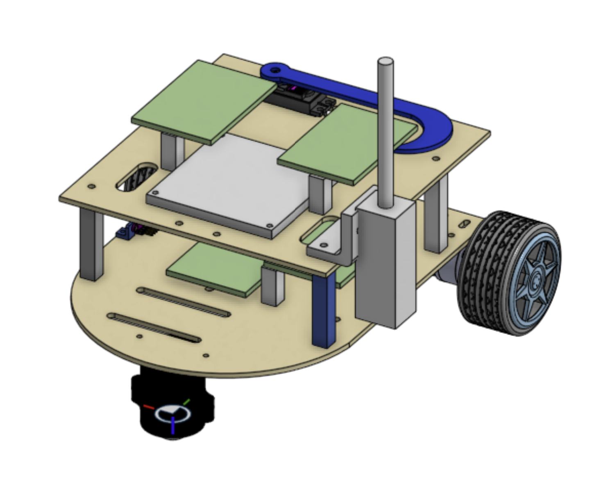
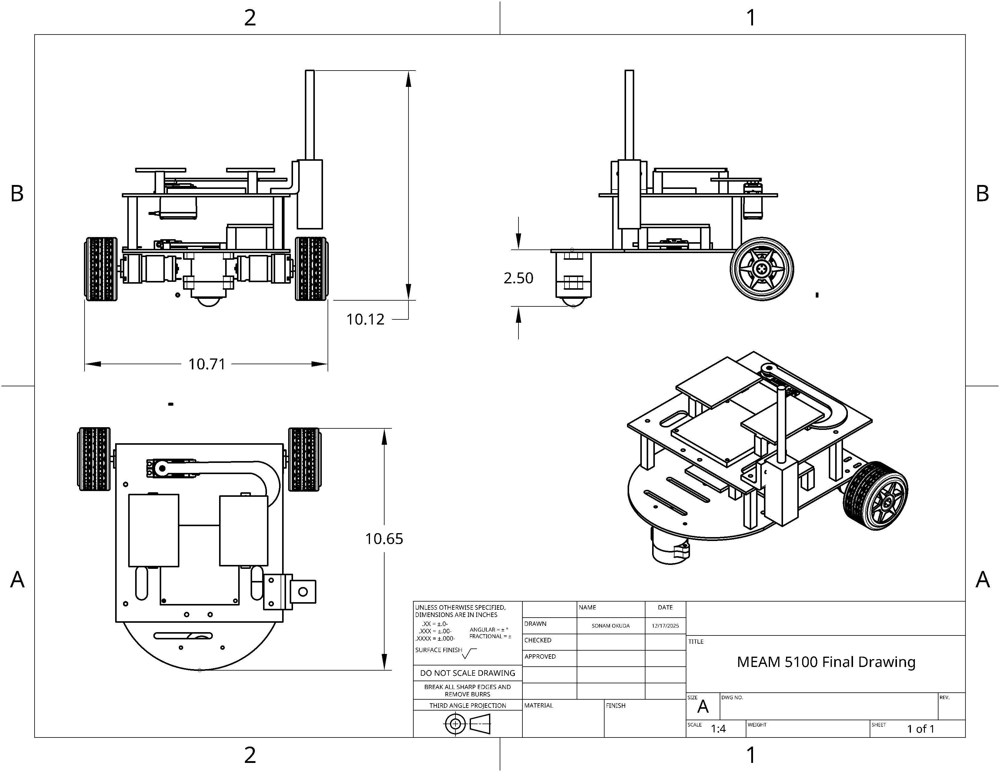
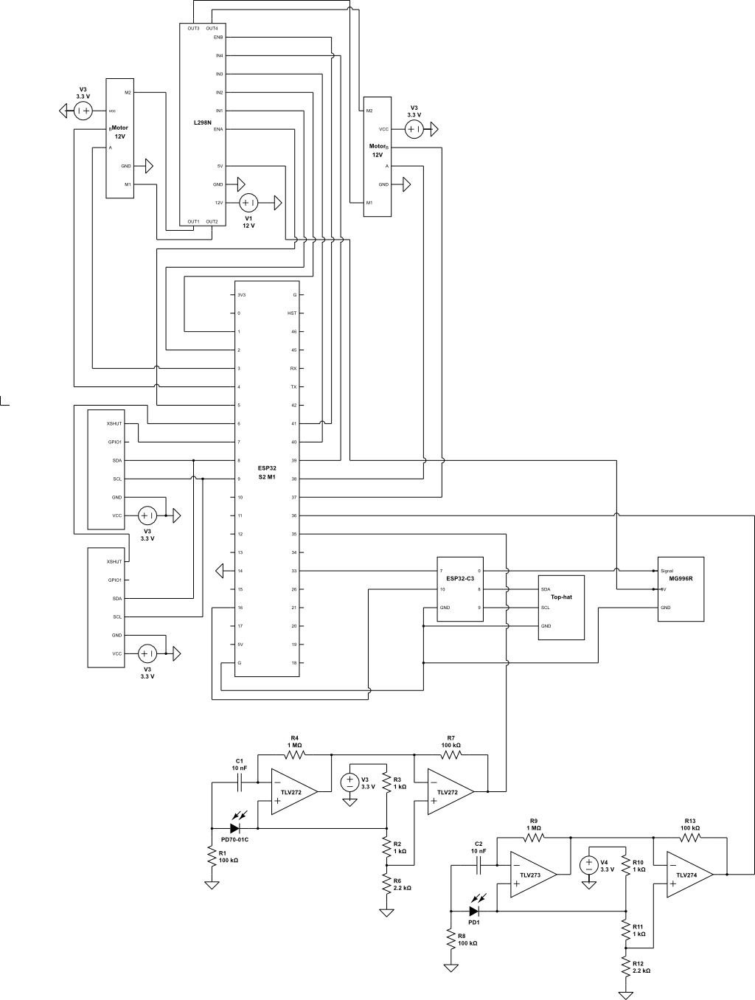

MEAM5100: Design for Mechatronic Systems
The aim of this course was to allow students to develop advanced hardware skill and gain experience designing and handling electronics. The final project was to design and manufacture a semi-autonomous robot that could complete various tasks such as flicking switches, pressing buttons, and completing laps around the arena.
Hardware Design and CAD
I was in charge of the mechanical design of the robot; because of the size constraints, my team opted for a two-layer robot to house the microcontroller and motors on the lower level, while hosting the Vive sensor and switches on the upper level. The time-of-flight (TOF) sensors were mounted on the bottom layer to allow the robot to wall follow.

Circuit Design
As the hardware lead for this project, I was also in charge of designing the circuitry. I soldered microcontrollers (ESP32-C3 and S2), TOF sensors, H-bridges, motor drivers, and DC motors to a central perf board, ensuring that electrical connection was reliable and that sensor data could be sent over the appropriate I2C buses.

Final Design